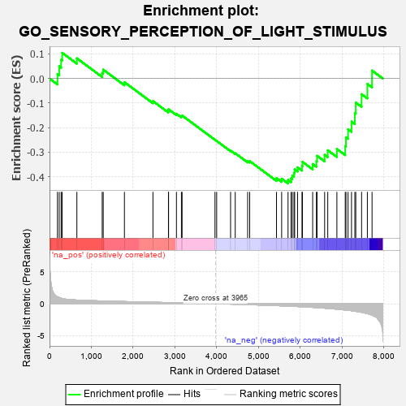
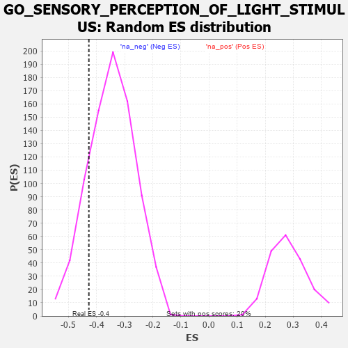

| | | Dataset | 7d |
| Phenotype | NoPhenotypeAvailable |
| Upregulated in class | na_neg |
| GeneSet | GO_SENSORY_PERCEPTION_OF_LIGHT_STIMULUS |
| Enrichment Score (ES) | -0.42743057 |
| Normalized Enrichment Score (NES) | -1.2320565 |
| Nominal p-value | 0.16313823 |
| FDR q-value | 0.5767437 |
| FWER p-Value | 1.0 |
Table: GSEA Results Summary

Fig 1: Enrichment plot: GO_SENSORY_PERCEPTION_OF_LIGHT_STIMULUS
Profile of the Running ES Score & Positions of GeneSet Members on the Rank Ordered List
| PROBE | GENE SYMBOL | GENE_TITLE | RANK IN GENE LIST | RANK METRIC SCORE | RUNNING ES | CORE ENRICHMENT | | 1 | RORB | | | 189 | 1.097 | 0.0179 | No |
| 2 | KIFC3 | | | 232 | 0.978 | 0.0497 | No |
| 3 | SOX14 | | | 278 | 0.859 | 0.0767 | No |
| 4 | RGR | | | 303 | 0.814 | 0.1047 | No |
| 5 | EYS | | | 654 | 0.575 | 0.0824 | No |
| 6 | WDR36 | | | 1260 | 0.437 | 0.0226 | No |
| 7 | NOB1 | | | 1284 | 0.433 | 0.0362 | No |
| 8 | GRM8 | | | 1791 | 0.339 | -0.0147 | No |
| 9 | VSX1 | | | 2473 | 0.231 | -0.0919 | No |
| 10 | NR2E1 | | | 2844 | 0.177 | -0.1318 | No |
| 11 | CLN6 | | | 2847 | 0.177 | -0.1254 | No |
| 12 | OPA3 | | | 3035 | 0.145 | -0.1435 | No |
| 13 | SFRP5 | | | 3154 | 0.129 | -0.1534 | No |
| 14 | PAX6 | | | 3170 | 0.127 | -0.1505 | No |
| 15 | GLRA1 | | | 3957 | 0.001 | -0.2496 | No |
| 16 | TULP2 | | | 3997 | -0.007 | -0.2543 | No |
| 17 | OPA1 | | | 4330 | -0.065 | -0.2937 | No |
| 18 | REEP6 | | | 4441 | -0.084 | -0.3044 | No |
| 19 | CNNM4 | | | 4738 | -0.147 | -0.3361 | No |
| 20 | MYO5A | | | 4787 | -0.155 | -0.3363 | No |
| 21 | IMPG1 | | | 5428 | -0.302 | -0.4055 | No |
| 22 | PDE6D | | | 5551 | -0.333 | -0.4083 | No |
| 23 | SIX6 | | | 5704 | -0.377 | -0.4131 | Yes |
| 24 | GLRB | | | 5776 | -0.398 | -0.4069 | Yes |
| 25 | BBS4 | | | 5806 | -0.407 | -0.3951 | Yes |
| 26 | ARL6 | | | 5847 | -0.417 | -0.3843 | Yes |
| 27 | BBS5 | | | 5862 | -0.421 | -0.3700 | Yes |
| 28 | CNGA1 | | | 5931 | -0.445 | -0.3617 | Yes |
| 29 | PPT1 | | | 6038 | -0.485 | -0.3566 | Yes |
| 30 | NR2E3 | | | 6048 | -0.488 | -0.3392 | Yes |
| 31 | OAT | | | 6293 | -0.572 | -0.3482 | Yes |
| 32 | BBS2 | | | 6383 | -0.608 | -0.3364 | Yes |
| 33 | BBS1 | | | 6397 | -0.616 | -0.3146 | Yes |
| 34 | RPGR | | | 6579 | -0.699 | -0.3108 | Yes |
| 35 | USH1G | | | 6654 | -0.740 | -0.2920 | Yes |
| 36 | ABCA4 | | | 6872 | -0.851 | -0.2871 | Yes |
| 37 | OPN4 | | | 7072 | -0.978 | -0.2750 | Yes |
| 38 | BBS7 | | | 7089 | -0.988 | -0.2394 | Yes |
| 39 | WHRN | | | 7139 | -1.025 | -0.2066 | Yes |
| 40 | CNGB1 | | | 7222 | -1.096 | -0.1753 | Yes |
| 41 | MYO7A | | | 7302 | -1.175 | -0.1406 | Yes |
| 42 | TRPM1 | | | 7324 | -1.197 | -0.0977 | Yes |
| 43 | CNGA3 | | | 7463 | -1.353 | -0.0637 | Yes |
| 44 | BEST1 | | | 7601 | -1.554 | -0.0219 | Yes |
| 45 | HMCN1 | | | 7713 | -1.801 | 0.0325 | Yes |
Table: GSEA details [plain text format]

Fig 2: GO_SENSORY_PERCEPTION_OF_LIGHT_STIMULUS: Random ES distribution
Gene set null distribution of ES for GO_SENSORY_PERCEPTION_OF_LIGHT_STIMULUS